El uso del control de versiones es obligatorio cuando se trabaja de manera colectiva y se quiere controlar el flujo de trabajo y el seguimiento de los cambios en el mismo. Incluso, para trabajar de manera individual, es deseable mantener vigilados los cambios realizados a un documento importante. RStudio trabaja bastante bien con Git (recordando que utilizaremos Github para hospedar nuestros archivos). Así que comencemos.
Debemos descargar Git desde Descargas. Lo instalamos. Ahora bajamos e instalamos RStudio desde Descargas, cuidando que sea obviamente la versión deseada. Lo ejecutamos enseguida.
Ahora nos dirigimos a GitHub y nos creamos una cuenta dando clic en el botón Sign up que se encuentra al lado superior derecho: 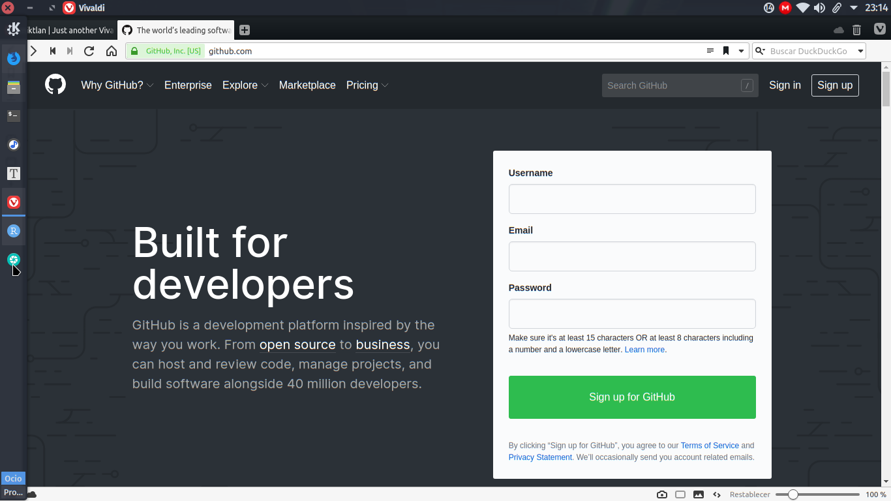
Nos pedirán un nombre de usuario, una dirección de correo y la contraseña. Abajo de todo, existe un paso de verificación de cuenta, solo hay que aprobarlo: 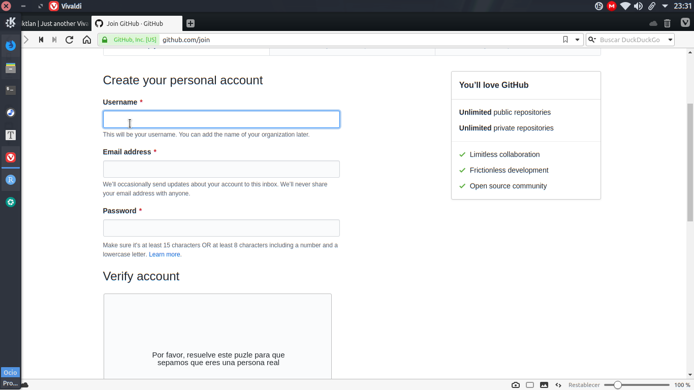
Ahora toca decirle a Git quiénes somos en GitHub. En RStudio nos vamos a Tools -> Shell y escribimos en la nueva ventana que saldrá, lo siguiente:
git config --global user.email "nombre_correo@company.com"
git config --global user.name "TuNombreEnGithub"Listo.
En la página de GitHub.com, ya autentificados, nos dirigimos al signo ‘+’ que se encuentra al lado superior derecho de la pantalla. Damos clic allí y luego en New Repository. 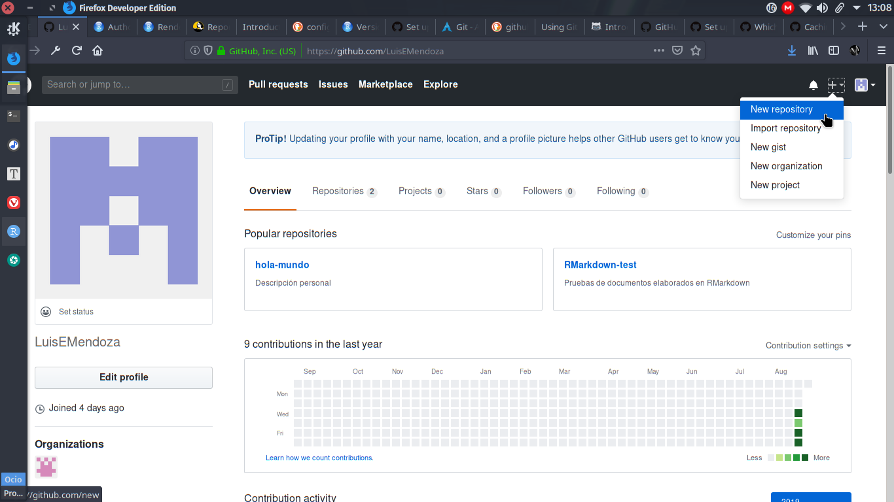
Le ponemos el nombre que deseemos, le damos una descripción adecuada, lo dejamos público, damos check a Initialize this repository with a README. Damos clic en el botón Add .gitignore y escribimos R. Damos clic en el siguiente botón Add license y seleccionamos GNU General Public License v3.0 y presionamos Create repository. 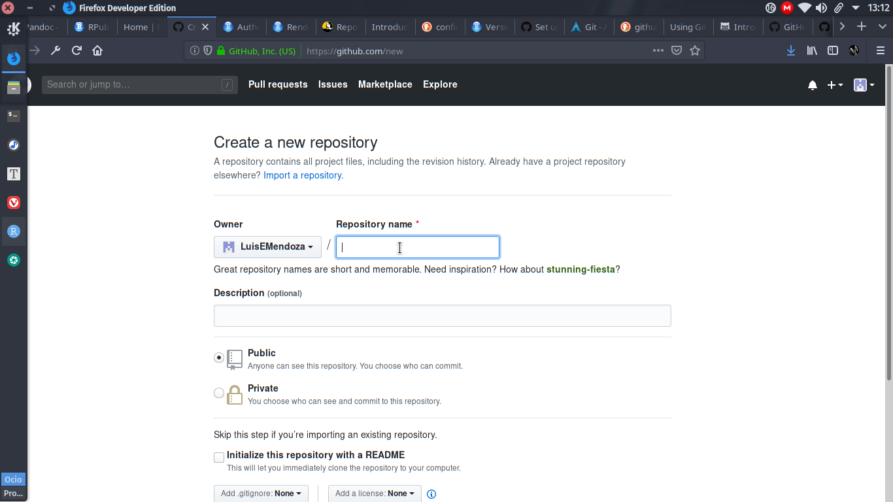
En nuestra página GitHub, damos clic a nuestro repositorio a clonar. 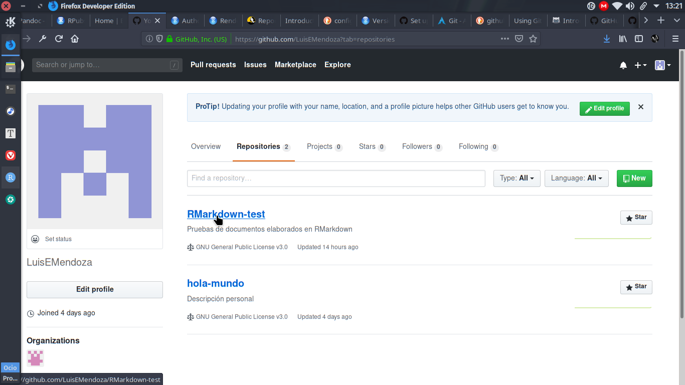
En la pestaña Code localizamos el botón verde Clone or download. 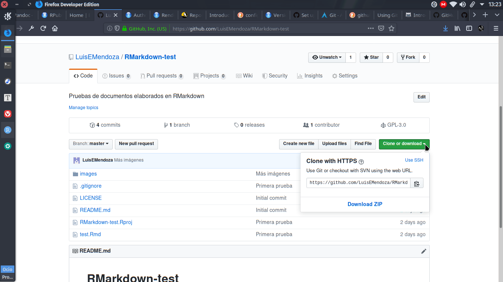
Damos clic en el botón Copy to clipboard para copiar la dirección del repositorio. 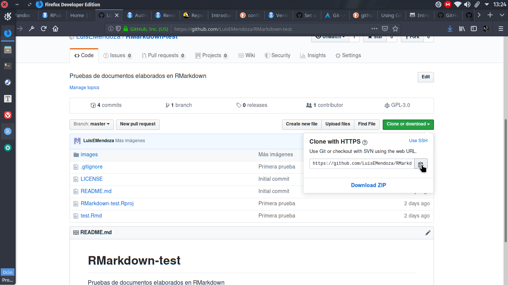
Ejecutamos RStudio y damos clic en File -> New Project -> Version Control -> Git. Pegamos la dirección copiada en Repository URL, presionamos tab para asegurarnos de que se ponga el nombre original del repositorio y presionamos Create project. 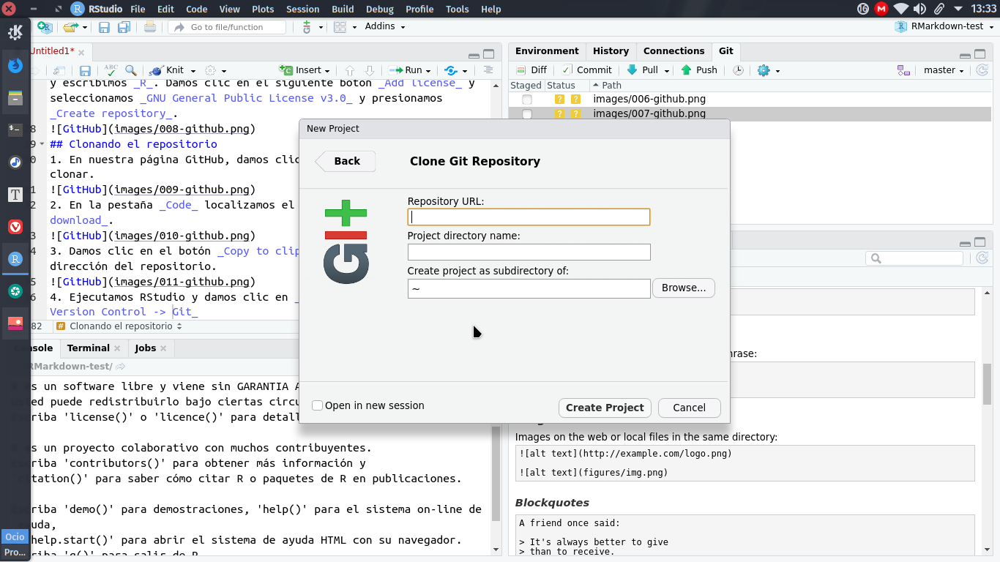
Con nuestro archivo guardado, es momento de «consolidar». Para ello, nos dirigimos a la pestaña Git que se encuentra en el panel superior derecho: 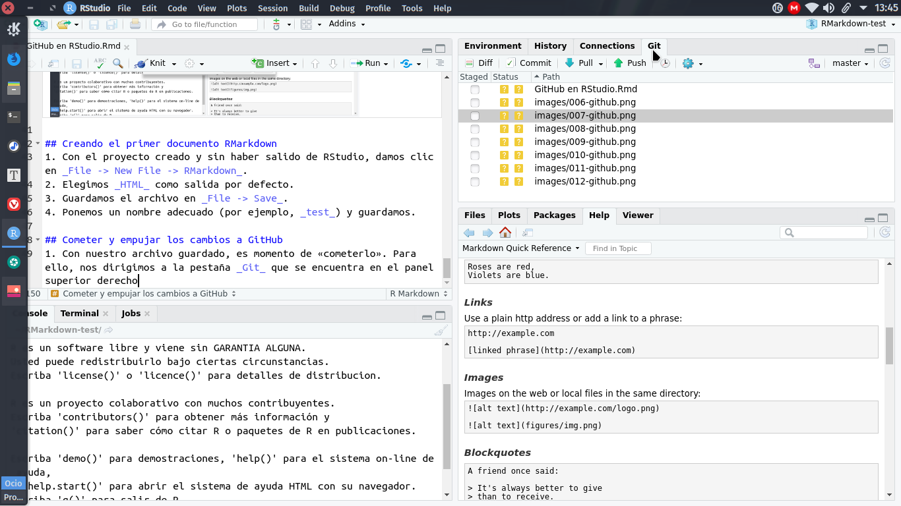
Presionamos Commit.
En la ventana Review Changes seleccionamos todos los archivos mostrados.Todos deberán cambiar su status a una letra A de color verde. Agregamos un mensaje al commit y presionamos el botón Commit: 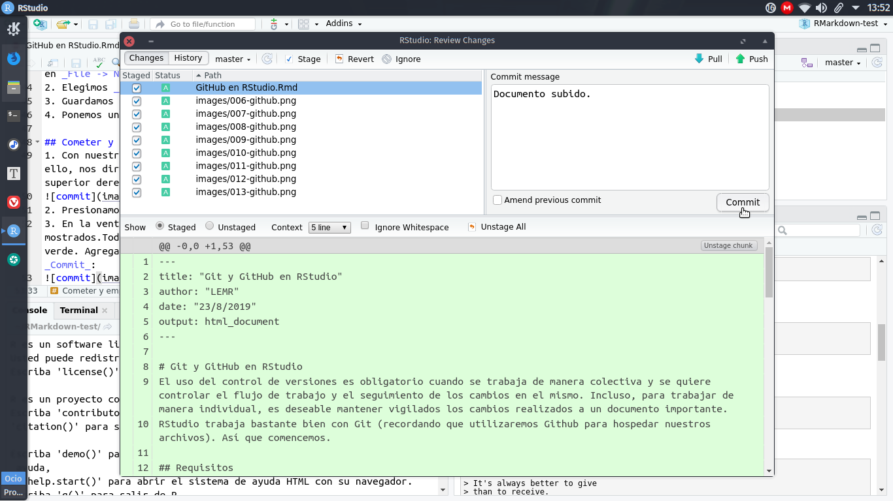
Después de un pequeño lapso, se mostrará una ventana con algunos mensajes. La cerramos con el botón Close.
Presionamos Pull en la ventana Review Changes que queda, esto es para «jalar» los cambios hechos en el repositorio de manera remota. Esperamos a que aparezca otra ventana y el mensaje «Ya está actualizado» y la cerramos con Close.
Ahora presionamos Push para «empujar» nuestros cambios hechos recientemente al repositorio. Aquí Git nos pedirá el nombre de usuario y la contraseña de la cuenta. Podremos cerrar la ventana cuando aparezca el botón Close.
Ahora hay que dirigirnos a nuestro repositorio GitHub para verificar los cambios realizados.
Cada vez que empujemos nuestros cambios a GitHub, éste nos pedirá nuestro nombre de usuario y contraseña. Si no queremos escribirlas cada vez, podemos almacenarlas de manera temporal en la caché. 1. Para Windows, se instala Git for Windows desde y se escribe en esa aplicación lo siguiente:
$ git config --global credential.helper wincred$ git config --global credential.helper cacheUn concepto intrínseco en GitHub es el uso de ramas, las cuales permiten desarrollar el proyecto principal en instancias separadas. Así, los cambios realizados no se reflejan en él de inmediato, si no que se someten a revisión cuando una de las ramas se considera terminada. Cuando los cambios hechos en una rama se consideran lo adecuados para implementarse en el proyecto principal, se realiza una petición pull. Al aprobarse, converge en la rama principal, que se llama Master. Para crearlas a través de RStudio: 1. Nos dirigimos al panel inferior izquierdo, damos clic a la pestaña Terminal y escribimos:
commit
git branch NombreDeRamagit statusEs importante notar que solo creamos la rama, no estamos dentro de ella (aún seguimos en la rama Master). 3. Para dirigirnos a la rama recién creada, escribimos:
git checkout NombreDeRamagit statusGeneremos la salida HTML de nuestro documento RMarkdown en un directorio separado llamado docs. Para lograrlo:
knit: (function(input_file, encoding) {
out_dir <- 'docs';
rmarkdown::render(input_file,
encoding=encoding,
output_file=file.path(dirname(input_file), out_dir, 'index.html'))})Guardamos el archivo.
Damos clic en el botón Knit que se encuentra en el panel donde estamos editando nuestro documento. Se generará el archivo HTML. Podremos ahora visualizarlo en su forma final.
Con el archivo HTML generado, es momento de consolidar los cambios.
git statusEl archivo deberá encontrarse dentro de los archivos sin seguimiento.
git add . git statusgit commit -m "Salida HTML a un directorio de documentos"git log --onelinegit diff --stat --summary master..NombreDeRamaEs momento de empujar los cambios: 1. Empuja los cambios al repositorio remoto:
git push -u origin NombreDeRamaSi este aviso no aparece (usualmente ocurre cuando estamos editando muy rápido nuestro repositorio), tendremos que ir justo debajo de donde debió aparecer el aviso. Damos clic en el botón que dice “Branch:master” y seleccionamos el nombre de nuestra rama en el desplegable. Enseguida damos clic en el botón “New pull request”.
Aparece una pantalla en la que debemos llenar con datos de la petición. Debemos asegurarnos de que en la parte superior sí esté seleccionada la base como master y compare como el nombre de nuestra rama. Presionamos el botón Create Pull Request.
En GitHub nos dirigimos a la pestaña Pull Requests de nuestro repositorio. Bajamos y damos clic en el botón verde Merge Pull Request. Confirmamos dando clic en el botón Confirm merge y borramos la rama nueva, si lo deseamos.
Ahora queremos publicar este documento en formato HTML como la página del sitio. Hay que realizar los siguientes pasos:
Entrar a la pestaña Settings del repositorio.
Bajar hasta la sección GitHub Pages.
En Source dar clic en el botón desplegable que dice None y seleccionar master branch/docs folder. 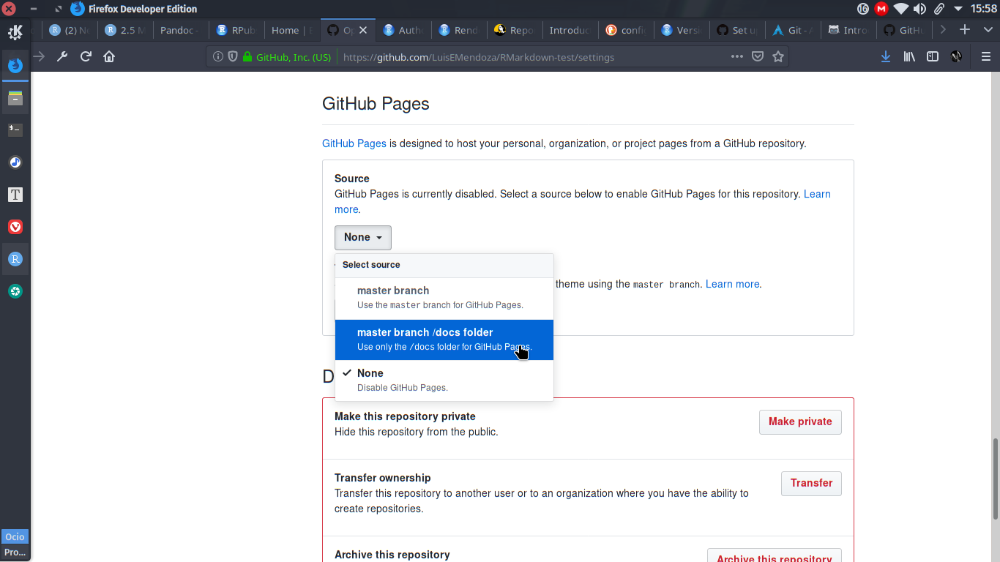
Aparecerá un mensaje en la misma sección GitHub Pages diciendo que el sitio ha sido publicado en una dirección con dominio github.io.
Damos clic en el sitio mostrado para poder acceder a nuestra página.
Después de haber unido las ramas del proyecto, toca actualizar el repositorio local, es decir, la computadora en la que se está trabajando.
git checkout mastergit pullgit branch -D adicionesgit log --oneline --graph --allAgregaremos una página de bienvenida y navegación a nuestro sitio github.io.
git branch themegit checkout themename: "cars"
output_dir: "docs"
navbar:
title: "Cars"
left:
- text: "Home"
href: index.html
- text: "Speed and Distance"
href: speed-and-distance.html
output:
html_document:
theme: cosmoAgrega otro documento RMarkdown llamado index.rmd. Será la página de bienvenida.
En el documento original que estuvimos elaborando, nos vamos al inicio y borramos los campos knit y output, quedando solamente el title como único obligatorio.
Guardamos los cambios.
Ejecutamos lo siguiente en la terminal de RStudio:
rmarkdown::render_site()Consolidamos los cambios con Git.
Abrimos la pull request y la convergemos.
Verificamos nuestro sitio.